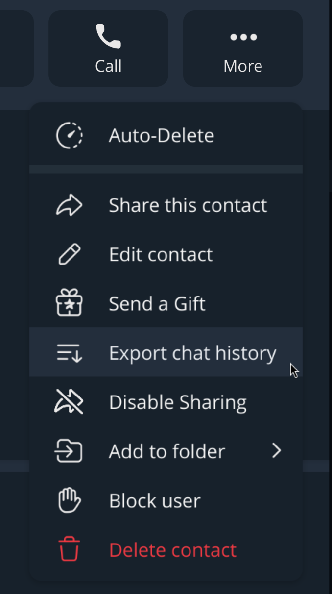
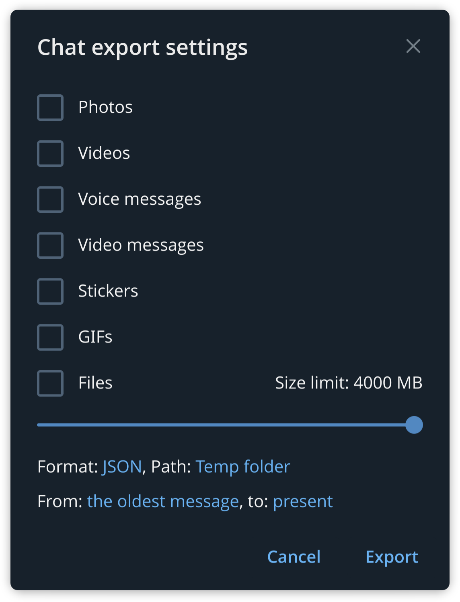

Insights
關係洞察
快速看出這段對話的節奏、起伏和雙向互動差異。
Privacy-first analytics
將檔案拖放到此處，或點擊選擇檔案
Export guide
目前狀態
準備好了，等您載入聊天檔案
0%
檔案只在本機瀏覽器處理，不會上傳、不會永久保存；重新整理後分析結果會消失。
Local dictionary
每行一個詞，只用於本機詞頻分析。
No sample data
匯入前不顯示假數字或假圖表。分析完成後，這裡會出現總覽、時間、節奏、訊息類型、詞頻、互動與通話等聚合結果。
Usage & data
建議使用 Telegram Desktop 匯出。這個頁面需要的是 result.json，不是純文字或 HTML。
Step 1
進入要分析的單一對話，打開右上角的 More 選單，選擇 Export chat history。

Step 2
在匯出視窗把格式設成 JSON。匯出完成後，把資料夾裡的 result.json 拖進這個頁面即可。
